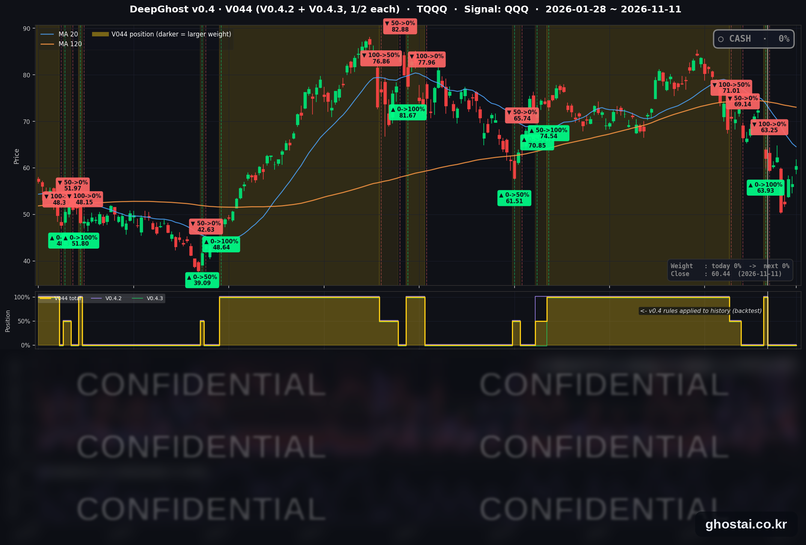

코어위브 실적에 AI주 급등, 나스닥 1.60% 상승
· Ghost.AI 데일리 리포트
👻 매일 시그널과 히스토리를 홈페이지에서 한눈에 → www.ghostai.co.kr
회원 페이지 안내 — 회원 가입하시면 공식 전략 v0.4의 TQQQ 비중과 판단 근거, 원본 차트, 분석 레포트를 매일 확인하실 수 있습니다. 회원 페이지는 블로그·유튜브보다 먼저 업데이트됩니다. 지금 베타 회원을 받고 있으며, 이메일과 필명만으로 가입하실 수 있고 서비스 사용료는 받지 않습니다. 이메일 확인 후 바로 이용하실 수 있습니다.
AI 클라우드 업체 코어위브가 예상보다 높은 3분기 매출을 발표한 뒤 메모리·서버·광통신 등 AI 하드웨어주가 크게 올라, 나스닥은 1.60%, S&P 500 은 1.31% 올랐습니다. 다만 S&P 500 중간 종목은 0.39% 오르는 데 그쳤고, 마이크로소프트·메타·아마존은 내렸습니다. 채권시장은 재향군인의 날로 휴장했고, VIX 는 17.49 로 11월 4일 이후 가장 낮은 종가입니다. TQQQ 는 6.86% 올랐고, 전략은 현금 보유 중입니다.
📊 오늘의 매매 신호
| 항목 | 내용 |
|---|---|
| 오늘의 신호 | 🟡 신규 신호 없음 — 전략은 현금 보유를 유지합니다 |
| 포지션 상태 | 💵 현금 보유 중 (OUT OF POSITION) |
| 현금 보유 기간 | 2026-11-02 ~ 2026-11-11 (8일, 11월 2일 시가 매도 후) |
| TQQQ 종가 | $60.44(+6.86%) |
TQQQ 시그널 — OUT OF POSITION
현재 상태: 현금 보유 중 | 11월 2일 시가 $63.25 매도

전략은 11월 2일(월) 시가 63.25달러에 TQQQ 를 매도한 뒤 현금 보유 중이고, 11월 11일에도 새 신호는 나오지 않았습니다. TQQQ 는 6.86% 오른 60.44달러로 마감했고, 매도가보다 4.44% 낮습니다.
오늘 미국 시장 — 시황 요약
지수 마감
| 지수 | 종가 | 등락률 |
|---|---|---|
| S&P 500 | 7,619.38 | +1.31% |
| 나스닥 종합 | 25,466.19 | +1.60% |
| 다우존스 | 52,486.49 | +0.49% |
| 러셀 2000 (IWM) | 283.09 | +0.89% |
| QQQ (나스닥100) | 690.38 | +2.31% |
| 반도체 ETF (SOXX) | 155.40 | +6.01% |
| TQQQ | 60.44 | +6.86% |
코어위브 실적은 전일 장 마감 뒤에 나왔고, 나스닥 상승분 대부분은 시가에서 났습니다(시가 +1.53%). S&P 500 구성종목 493개 중 322개가 오르고 168개가 내렸지만, 중간값은 +0.39% 로 지수 상승률보다 낮았습니다. 지수 상승은 반도체·하드웨어 대형주에서 나왔습니다.
나스닥은 하루 만에 200일선 위(1.37%)로 돌아왔고, 11월 3일 중간선거일 종가도 다시 넘었습니다. 10월 6일 최고 종가와 비교하면 S&P 500 은 2.55%, 나스닥은 7.73% 낮습니다.
국채 금리 동향
11월 11일은 재향군인의 날로 채권시장이 휴장해 이날 금리 종가는 없습니다. 아래는 마지막 정상 거래일인 11월 10일 종가입니다.
| 만기 | 11/10 종가 |
|---|---|
| 3개월 | 4.115% |
| 5년 | 4.807% |
| 10년 | 4.983% |
| 30년 | 5.350% |
미 재무부 기준 2년물은 11월 10일 4.73% 입니다. 11월 10일에는 높은 소비자물가 발표 뒤 1~5년 구간이 가장 많이 올라, 채권시장이 물가와 추가 금리 인상을 의식하는 구도였습니다. 채권시장은 11월 12일 다시 열리고 같은 날 30년물 입찰이 있습니다. 10년물이 5% 위로 마감하는지가 관심입니다.
연준 발언 & 금리 패스
- 굴스비 시카고 연은 총재 (11월 10일 PBS 인터뷰, 11일 보도): 10월 소비자물가를 두고 "또 하나의 괴로운 보고서, 경계선상의 우려 수준"이라고 했습니다. "실제 인플레이션 문제가 생겼고 계속 커져 왔다", "대응해야 한다"고 말했고, 서비스 물가가 내려오지 않는 점과 기대 인플레이션이 오르는 점을 걱정했습니다. 12월 인상 여부는 다음 회의를 미리 정해 두고 싶지 않다며 밝히지 않았습니다. 매파적입니다.
- 11월 11일: 재향군인의 날로 연준 공식 일정은 없었습니다.
- 금리 경로: 기준금리는 3.75~4.00% 이고 다음 회의는 12월 8~9일입니다. 전일 월러 이사는 근원 소비자물가가 0.3% 이상이면 12월 0.5%p 인상을 검토해야 한다고 했고, 발표치는 0.3% 였습니다. 12월 인상은 기본 시나리오이고 쟁점은 폭입니다. 회의 전 11월 13일 PPI, 11월 18일 FOMC 의사록, 12월 4일 고용보고서가 나옵니다.
오늘의 핵심 이슈
- 코어위브 실적 뒤 AI 하드웨어주가 크게 올랐습니다. 코어위브는 10일 장 마감 뒤 3분기 매출 36.6억 달러(예상 35.5억 달러)를 발표하고 올해 매출 전망을 130억~133억 달러로 올렸습니다. 11일 코어위브 주가는 24.71% 올랐습니다. S&P 500 구성종목 중 메모리·저장장치 종목의 등락률 중간값은 +10.94%, 광통신·네트워크 종목은 +8.80% 이고, 마이크론은 11.89% 올라 7월 30일 이후 가장 큰 상승률을 기록했습니다.
- 대형 기술주는 엇갈렸습니다. 마이크로소프트(-2.26%)·메타(-1.97%)·아마존(-1.74%)은 시가에는 올랐다가 장중에 내렸습니다. 마이크로소프트는 앤트로픽이 업무용 AI 도구를 공개한 10일에 이어 이틀째 내려, 이틀 하락률이 4.41% 입니다. 엔비디아는 2.87% 올라 이틀 하락을 멈췄지만, 같은 날 베어드는 투자의견을 '중립'으로 낮추고 목표주가를 500달러에서 200달러로 내렸습니다. CEO 거취 불확실성, 대중국 수출 규제 가능성, 2027년 대형 클라우드 기업의 AI 설비투자 증가율 둔화 가능성을 이유로 들었습니다. 애플은 2.04% 올라 사상 최고 종가를 기록했습니다.
- 채권시장 휴장 속에 연준 인사의 매파 발언이 이어졌습니다. 금리 움직임이 없는 날이었지만, 금리에 민감한 주택건설·부동산·경기소비재는 이틀째 약했습니다. 반면 S&P 500 에너지 업종 21종목은 모두 올랐습니다.
변동성 & 투자심리
VIX 는 10.12% 내린 17.49 로 마감해 11월 4일(16.61) 이후 가장 낮은 종가를 기록했습니다. 11월 5일 28.18 이후 4거래일 연속 내렸습니다. 공포탐욕 지수는 37(공포)로 전일 33, 1주 전 34, 1개월 전 44 입니다. 변동성은 줄었지만 상승이 AI 하드웨어에 몰렸고 12월 금리 인상 폭에 대한 부담은 그대로여서, 시장 분위기는 중립에 가깝습니다.
매크로 & 원자재
| 품목 | 종가 | 등락률 | 11/3 대비 |
|---|---|---|---|
| WTI 선물 | $86.42 | +0.44% | -10.06% |
| 브렌트 선물 | $92.63 | +1.25% | -10.59% |
| 원유 ETF (USO) | $141.47 | +0.01% | -10.56% |
| 금 선물 | $3,994.30 | -0.89% | +1.37% |
| 금 ETF (GLD) | $365.17 | -1.13% | +1.64% |
원유는 장중 WTI 88.74달러(+3.14%)까지 올랐다가 상승 폭이 대부분 줄어든 채 마감했습니다. 금 선물은 이틀 연속 내려 4,000달러 아래로 마감했고, 11월 3일 이후 가장 낮습니다.
주요 종목 동향
| 종목 | 종가 | 등락률 | 비고 |
|---|---|---|---|
| MU | 811.30 | +11.89% | 7월 30일 이후 최대 상승 |
| INTC | 62.50 | +7.52% | 3거래일 +11.05% |
| AVGO | 345.22 | +3.99% | 3거래일 +17.55% |
| TSLA | 390.84 | +2.91% | |
| NVDA | 173.73 | +2.87% | 이틀 하락 멈춤, 베어드 '중립' 하향 |
| GOOGL | 293.45 | +2.11% | |
| AAPL | 355.63 | +2.04% | 사상 최고 종가 |
| NFLX | 64.54 | +2.02% | |
| QCOM | 176.57 | +1.75% | |
| AMZN | 266.17 | -1.74% | 시가에는 상승 |
| META | 628.77 | -1.97% | 시가에는 상승 |
| MSFT | 521.13 | -2.26% | 이틀 -4.41% |
커버리지 12종목 중 9종목이 오르고 3종목이 내렸습니다. 반도체 5종목(마이크론·인텔·브로드컴·엔비디아·퀄컴)이 모두 올랐고, 내린 3종목은 모두 대형 플랫폼 기업입니다.
다음 일정 (미 동부시간)
- 11/12(목) 채권시장 재개 / 08:30 주간 신규 실업수당 청구 / 10:00 바 이사 연설 / 13:00 30년물 입찰 / 장 후 어플라이드 머티리얼즈·시스코 실적
- 11/13(금) 08:30 10월 PPI / 10:50 보먼 부의장 대담 / 19:00 제퍼슨 부의장 연설
- 11/17(화) 08:30 수출입물가 / 09:15 산업생산 / 엔비디아 3분기 실적
- 11/18(수) 14:00 10월 FOMC 의사록
- 11/20(금) 월간 옵션 만기
- 12/4(금) 08:30 11월 고용보고서
- 12/8~12/9 FOMC
Ghost.AI — Quantitative AI Investment
Model: DeepGhost v0.4 | Transformer-Based Deep Learning
Coverage: 14 tickers | Updated every trading day after US market close
⚠️ 본 자료는 정보 제공 목적으로만 작성되었으며 투자 권유가 아닙니다. 모든 투자의 책임은 투자자 본인에게 있습니다. 과거 성과가 미래 수익을 보장하지 않습니다.
[유의사항]
- 본 서비스는 불특정 다수를 대상으로 발행되는 단방향 정보 제공 서비스이며, 투자자 개인의 재산 상황·투자 목적·위험 선호도를 반영한 개별 투자 조언이 아닙니다.
- 고스트에이아이 주식회사는 고객과 쌍방향 의사소통(개별 상담, 맞춤형 자문 등)을 제공하지 않습니다.
- 본 콘텐츠는 투자 권유 또는 매매 주문의 청약·청약의 권유에 해당하지 않으며, 최종 투자 판단 및 그에 따른 손익의 책임은 전적으로 투자자 본인에게 있습니다.
고스트에이아이 주식회사